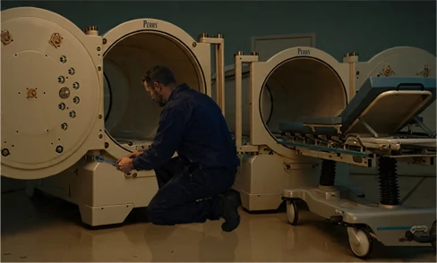

Overcast gray ↔ Piercing blue.
Sharp. Dry. Heavy. Every breath? Stings.
Snow crunches loudly. Too frozen to melt.
Frosted window edges. Warm yellow incandescence.
The unmistakable aroma of things by hand.
1963. Gardner, Massachusetts. “Chair City of the World.”
Maple + Birch + Oak. Freshly cut.
Wood stain + glue. Lacquer. Varnish.
Heating oil + Coal. Soot.
Motor oil & Grease.
Peter Roberts. An eighteen-year-old clerk at the local Sears.
Problem solving on his own time. Off the clock. With his own two hands.
Every mechanic in America? Had the same problem, including Peter: Fingers slick with grease and oil. Prying, yanking, wrestling with a stuck socket. Incessant...
It all began when he was a kid. Watching his dad make things in the shop behind their home on Chestnut Street.
His first bike? Made from spare parts. First scooter? Same.
Repairing bicycles and motorcycles? = Frustration + An exercise in futility.
So, while tinkering in his father’s lawn mower repair shop he hit on an ingenious idea.
His solution? The button. You know, the little one on top of your ratchet.
Press it, and the socket drops free into your palm.
Press. Drop. Done. All in one hand. Magic.
He filed for a patent. Then he made the honest mistake of trusting his employer with it.
Sears looked at his invention and told him it probably wouldn’t sell. Limited value and patents pending on similar tools, you know? So, they offered him $10K for the rights.
And with nobody advising him what it was really worth? Trusted the company he worked for and signed on the dotted line.
Then? He joined the Air Force. One day, while stationed in England, he opened a Sears catalog — and there it was. His button.
Front and center. Its own featured display.
Sold under the Craftsman name.
“Releases without a fight.”
Something...didn’t add up. So, Peter did the math.
Between 1965 and 1975 Sears sold 19M quick release wrenches. Net profit? $44M+.
From a patent they’d bought for $10K and called nearly worthless.
They’d known all along. They just bet a teenager would never be able to prove it.
Peter? He spent the better part of his life refuting that assessment.
In 1969 he sued. The jury? Found that the patent had been obtained through fraud. But Sears appealed and appealed again. The case ground on through hearing after hearing and retrial after retrial and victory after reversal. For twenty years Peter refused to let it go, until, in 1989, Sears finally settled for a reported $8.5M.
When it was over, he didn’t take the money and vanish. He started a company in Red Bank, TN — Link Tools — and built quick-release ratchets and sockets.
The very thing they’d tried to take. This time? His name was on it.
And he never stopped. That kid who built his first bike from spare parts — who tinkered in his father’s lawn mower shop on Chestnut Street — holds more than 25 patents today. And that one button? The one Sears called nearly worthless? It’s sold an estimated 150 million times.
The boy who learned to make do with what he had ended up making something the whole world reaches for.
This July marks 250 years of a country built the very same way. By people whose names most of us will never know. The ones who built quietly, held the line, fixed the unfixable, and handed it all forward without waiting for applause.
Their work is the floor we stand on.
Look around your own center. Most of what keeps it running is invisible — the careful checklist nobody notices, the standard somebody holds when no one’s watching, the small thing done right ten thousand times. That’s the work that gets carried forward. That’s the work that builds the next 250.
